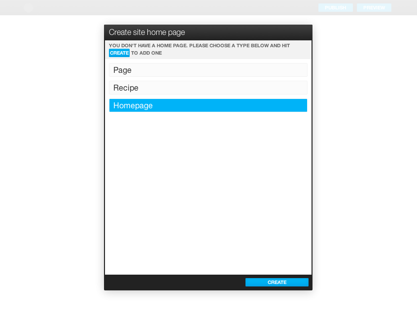
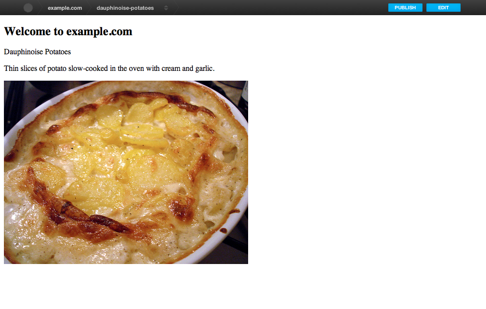

Spontaneous CMS Tutorial Part 1 – Creating a Basic Site¶
This will walk you through creating your first Spontaneous project. In this tutorial we’re going to look at the creation of a simple site that will let you publish your favorite recipies.
Before you start you should have worked through the Installation Guide.
To make sure that Spontaneous is installed and works try running the included spot program:
$ spot version
If this doesn’t work then you don’t have Spontaneous installed or something is stopping it from working. In that case please go have a look at the Troubleshooting section.
Generate a Website Skeleton¶
Use the spot executable to generate a new site, in this case example.com:
$ spot generate example.com
Change into our newly generated Spontaneous site directory:
$ cd example_com
Use bundler to install the dependencies (this make take a minute or so):
$ bundle install
Now use the spot command to initalize the site. This will create the necessary databases and database tables:
$ spot init
Warning
Postgres users my have to set up their access permissions first. If you are logged in as the user ‘fred’ then Spontaneous’s generator will have created a default config/database.yml set to access the database with the same username as your login account. Before running spot init try connecting to the database as yourself:
[fred ~]$ psql postgres
If this doesn’t work then you’ll need to do a couple of extra steps. As root:
[root ~]$ su - postgres
[postgres ~]$ createuser --createdb --no-password fred
[postgres ~]$ exit
The --no-password is optional but if you give the user a password be sure to update your config/database.yml to match.
Now you should be able to connect as yourself:
[fred ~]$ psql postgres
and spot init should run.
As part of the initialization you will be asked for some details in order to create a root-level user for the site. If possible details will be taken from your git config (name & email address).
Spontaneous has a useful “auto login” feature in development mode which will be configured to use this root account.
Note
This requires administrator access to your database in order to do its work. It should hopefully work out of the box but you may need to pass in extra authenticaion parameters in order to correctly access the database.
Create Your Schema¶
Spontaneous uses basic Ruby code to define its content models. You don’t need very much knowledge of Ruby in order to define the schema for a website, but a basic familiarity with the language will make things much easier.
Let’s first think about what we’re trying to achieve: a homepage that shows a list of recipes and a set of recipe pages that have:
- A recipe title
- A short description of the recipe
- A photo of the finished dish and
- A list of ingredients,
- A set of instructions (each instruction with an optional photo)
Our first step will be to set up our homepage.
Add a Site Homepage¶
Each page in the site has an associated ‘type’. This type corresponds to a Ruby class that inherits from the Content base class defined in lib/content.rb.
Content types are defined in the schema directory by default. There will already be some files in there page.rb, piece.rb and box.rb. These define some top-level convenience classes that you should use as the basis for your site’s schema.
Now onto creating our site’s schema.
Create the file schema/homepage.rb and paste the following code into it:
# schema/homepage.rb
class Homepage < Page
box :recipes do
allow :Recipe
end
end
This is a very minimal start. All we’ve done is to define a Homepage content type that inherits from Page and has a box called recipes that allows us to add instances of some Recipe content type.
This is the basis of a Spontaneous site. A set of Page types that have boxes allowing us to add other Page types. This is how you build your site’s hierarchy, starting at the site homepage.
Define our Recipe Type¶
The Recipe type we referred to in our Homepage doesn’t exist so we need to create that before we do anything else.
Create a file called recipe.rb in the schema directory:
# schema/recipe.rb
class Recipe < Page
end
This is another Page type. At the moment it doesn’t do much but we can fill in the details later.
What it lets us do though is start our server and see what we’ve created so far.
Run the Development Server¶
In order to see what we’ve done we need to run the CMS server application:
$ spot server
This will start a server running on on your machine. The default development URL is <http://127.0.0.1:2011>.
Open your browser and navigate to <http://127.0.0.1:2011/@spontaneous>. You should see something that looks like this:
{kind=link}
In order to start building your site, you need to choose a content type that will be used for the site homepage.
Select the “Homepage” entry in this dialogue:
{kind=link}
And then click “Create”.
Once that’s done you should see something like this:
{kind=link}
What you’re seeing is the editing view of your new site homepage.
It has a ‘title’ field and below that you can see the ‘recipes’ box we defined above.
Below the box name you can see one button labelled “Recipe”. This is what we use to add things to our homepage. Because the only thing we’ve ‘allowed’ to be added to our recipes box are instances of the Recipe type, we only have this one button.
Go ahead and click the “Recipe” button to add a Recipe instance to our box:
{kind=link}
A new Recipe instance will appear with its title field open for editing. Choose a title for your recipe, “Mashed Potatoes” in this case and hit save.
Note
As well as using the ‘Save’ button you could also just hit return, type Ctrl-S or (on a Mac) Cmd-S – Spontaneous tries to make everything as natural as possible.
{kind=link}
If you move the mouse just below the recipe we’ve just added you should see a button appear identical to the one we just clicked. This button allows you to add a recipe below the one we’ve just added. Boxes allow you to add items anywhere using these inline buttons. Add another recipe and move the mouse around between them, you’ll see the ‘Recipe’ button appear in all the gaps.
Add as many recipes as you want. If you want to re-order them simply click and hold the mouse on any entry and you should be able to drag it around to the right position.
There, we’ve created our homepage and some recipes.
These recipes aren’t very interesting or useful though. To improve the situation we need to expand the definition of the Recipe type.
{kind=link}
Defining Editable Fields¶
So now we have a page type called “Recipe”. Now we need to define the editable fields that each recipe needs (title, description and photo):
# schema/recipe.rb
class Recipe < Page
field :description, :markdown
field :photo, :image
end
Fields are defined by adding a call to the field directive within the body of the content type definition. The syntax is:
field :<field_name>, :<field_type>, [options...]
field_name is what you’ll use to refer to the value of the field within your templates (see later) and also the name that will show up in the editing interface.
If you hit ‘reload’ in your browser Spontaneous will reload your schema code and your site homepage should look something like this:
{kind=link}
If you wanted to use a different name for the field in the user interface, you would pass a value for title in the field options:
field :description, :markdown, title: "A short description"
This would change the name of the field in the user interface to “A short description” but the internal name of the field would still be “description”.
{kind=link}
The second parameter to the field definition is the field type. The basic field types are :string, :markdown and :image (though there are more see Field Types).
String fields are basic bits of text without any formatting. They are useful for titles and any other bit of text that you want to appear as unstyled. string is the default type, so if you want to create a string field you can skip the type parameter:
# defaults to a ``string`` field
field :name
Markdown fields allow for the entry of rich text using the Markdown format. These are useful for body text and allow the content editors to style text as bold or italic, add lists of items, headers and hyperlinks.
Markdown is currently the only supported ‘rich’ text format. Because of this a lot of effort has gone into making the Markdown editing experience as comfortable & efficient as possible.
Note
Why not WSIWYG? If you’ve ever stuggled with a browser based WYSIWYG you’ll know that things don’t always go to plan. One of the design philosophies of Spontaneous is to allow content editors to produce richly styled web-pages without having to struggle with layout themselves and without being in danger of breaking the layout of the pages. WYSIWYG editors actually hinder this. If and when browsers’ WYSIWYG implementations improve enough to be reliable and produce safe and uncluttered HTML (which doesn’t break catastropically when pasting from Microsoft Word...) then they might be supported.
Image fields allow you to upload images using a drag-and-drop interface. Spontaneous has very powerful image manipulation functions built into it which allow you to define & generate multiple different versions of each uploaded image. For more information see Image Fields
One useful shortcut when defining fields is that if no field type is given then it will first try to find a field type based on the name of the field. So, for example:
field :image
# is exactly the same as
field :image, :image
Each field type also has some useful aliases, for example image fields can be referred to as photo fields:
field :photo
# is the same as
field :photo, :photo
# which is the same as
field :photo, :image
So our Recipe page definition could also have been written like this:
# schema/recipe.rb
class Recipe < Page
field :description, :markdown
field :photo
end
Where’s the title?¶
You may have noticed that although we said that each Recipe page should also have a recipe title, the above Recipe type definition has no title field defined. How come?
The secret is in the Page content type that Recipe inherits from. This Page type is defined in the schema/page.rb file that Spontaneous will have generated for you. It will look something like this:
include 'content'
class Page < Content::Page
field :title, :string, :default => "New Page"
end
Because our Recipe type is inheriting from this Page class we also inherit its fields, in this case the title field.
Note
This is a very powerful feature of Spontaneous’s type system. It allows you to share field values (and more) between different content types. This way you can have many different content types that are mostly the same but differ in a few key areas. To read more about this inheritance model see Schema Inheritance.
Note that the title field has a default option specified in its definition. This option allows you to give a default value for the field. In this case we’re specifying that each new page should be called “New Page”.
Hmm, “New Page” isn’t very good for new recipes, so what we can do is re-define the title field inside our Recipe class and change this default value to something more appropriate:
# schema/recipe.rb
class Recipe < Page
# we can drop the type for the `title` field
# because the default is :string
field :title, default: "New Recipe"
field :description, :markdown
field :photo
end
Now, when we add a recipe we are presented with this:
{kind=link}
For more details on defining fields see Fields.
Now we have the fields defined for our Recipe type, but what about the ingredients and instructions? For that we need to learn how to use the next most important element of the Spontaneous schema: boxes.
Creating and Filling Content Boxes¶
Spontaneous boxes allow you to fill a page with any amount of additional content. They are ‘holes’ in our pages that we configure to accept the addition of certain other content types. Within the CMS user interface these boxes allow you to add, remove and re-order their content with an intuitive drag-and-drop interface.
The content of boxes can be either pages or “pieces”. We have described pages as content that has its own URL and is directly accessible within the browser. “Pieces” however only exist within pages and don’t have URLs. They do share the same ability to have fields (and boxes) and are defined in almost exactly the same way.
So, let’s create an “Ingredients” box that will hold our list of ingredients. We do this within our schema/recipe.rb file as before:
# schema/recipe.rb
class Recipe < Page
# we can drop the type for the `title` field
# because the default is :string
field :title, default: "New Recipe"
field :description, :markdown
field :photo
box :ingredients do
allow :Ingredient
end
end
This adds the ingredients box and specifies that we want to allow the user to add items of type “Ingredient”. Now we need to define the “Ingredient” type.
Note
We will do this in the same file as the Recipe type for convenience but it’s usually a good idea to stick to a one-type-per-file rule.
# schema/recipe.rb
class Ingredient < Piece
field :name
field :quantity
end
Our “Ingredient” type is pretty simple, just a name and a quantity.
Now we need to create the recipe itself by allowing the user to enter a set of instructions:
# schema/recipe.rb
class Recipe < Page
# we can drop the type for the `title` field
# because the default is :string
field :title, default: "New Recipe"
field :description, :markdown
field :photo
box :ingredients do
allow :Ingredient
end
box :instructions do
allow :Step
end
end
class Ingredient < Piece
field :name
field :quantity
end
# Step entries are added to the "instructions" box within our Recipe
class Step < Piece
field :instructions, :markdown
field :photo, comment: "Optional"
end
Our Recipe type now has an “instructions” box that allows the user to add any number of “Step” pieces. Each Step has a set of instructions and a photo. The photo field has a comment set – this will appear in the user interface in order to offer some guidance to editors. In this case we’re telling them that they don’t have to have a photo for each step.
For now that’s enough to power our recipe site.
Use the CMS User Interface to Build Your Site¶
Now that we have a simple schema, we can go ahead and write a recipe.
Navigating within the CMS¶
To do that we first need to navigate to one of the recipe pages within the CMS.
There are two ways to do this:
By clicking on the recipe title in the ‘Recipes’ box:
{kind=link}
or choosing the page from the pulldown in the navigation bar:

Once there you will see the editor for our Recipe page with the “Ingredients” and “Instructions” boxes we defined in the schema:
{kind=link}
Page URLs¶
You can also see the page’s URL path, in this case /dauphinoise-potatoes. This has been automatically taken from the page’s title.
Note
Pages are added with a default ‘slug’ that is auto generated in order to avoid collisions. The default format is "page-#{Time.now.strftime('%Y%m%d-%H%M%S')}" which will generate for example page-20140313-141012. Once you set the title field of the page this default slug will be overridden by one generated from the given title.
These paths define the public URL of the page. So if our new recipes site is hosted at ‘spontaneous-recipes.com’ the full URL of our new Dauphinoise Potatoes recipe will be http://spontaneous-recipes.com/dauphinoise-potatoes.
If you don’t like a page’s URL then to change it simply click on it and you’ll be presented with a text input:
{kind=link}
This is a special editor that will automatically convert your typing into URL safe characters: spaces and other punctuation will be converted to dashes and all text will be made lower case.
The editor will also warn you if your new path is invalid or a duplicate (having two pages with the same path would stop one of them from being visible).
{kind=link}
Building the Page¶
First fill in the page’s description and choose an image. To to this, click on the page fields to reveal the editing interface and fill in the text. To set the photo you can either:
- Click on the grey photo placeholder which will pop up a file-picker dialogue or
- Drag a file from your desktop of file browser and drop it onto the grey photo placeholder.
{kind=link}
Once you’re happy with the page’s description & image save the fields (using the save button, Ctrl-S or Cmd-S).
Now we want to add our ingredients by going to the “Ingredients” box and clicking the add “Ingredient” button. To add the ingredients in order, use the add ingredient button that appears below the last ingredient in the list.
{kind=link}
As you add each ingredient fill in the “Name” & “Quantity” fields appropriately.
{kind=link}
Do the same for the Instructions box:
{kind=link}
That’s it. Our recipe content is complete.
Create HTML Templates¶
Now that we’ve finished editing let’s see how our site will look like to visitors:
{kind=link}
Oh. Not very good. What we’re seeing is Spontaneous’s default page template simply dumping the values of your fields.
Layouts¶
If you’ve ever used Ruby on Rails you’ll be familiar with the concept of ‘layouts’. They are the top-level frame within which the rest of a page’s content is “hung”, so to speak. Spontaneous uses the same concept (and a similar file layout).
The file templates/layouts/standard.html.cut is the default layout for every page. It has some HTML5 boiler plate at the top and then this:
%{ block :content }
<h2>Welcome to example.com</h2>
${ fields }
${ boxes }
%{ endblock :content }
The block and endblock directives are part of Spontaneous’s template inheritance system (which is modelled after Django’s).
If we want to create a layout specific to our recipes then all we need to do is inherit from this standard layout and overwrite the contents of the content block you see defined above.
To do this, add the file templates/layouts/recipe.html.cut with the following contents:
%{ extends "layouts/standard" }
%{ block :content }
<h3>${ title }</h3>
${ description }
${ photo }
${ ingredients }
${ instructions }
%{ endblock }
The extends directive right at the start specifies that we are extending the standard layout and the block ... endblock section overwrites the contents of the standard layout file with our modified code. The rest of the layout will be the same as the standard layout, including the <head> block.
The ${ } blocks are Spontaneous tags. title, description and photo reference the page fields and will insert their HTML values into the page. In the case of the photo field this will insert a full <img/> tag with correct width and height attributes.
The ${ ingredients } and ${ instructions } tags will insert the boxes, once we have defined their templates.
The resulting page looks pretty much the same as before but we are well on our way to having a working recipe page.
The Ingredients & Instructions¶
Let’s add the ingredient list. First let’s create a template for the “ingredients” box. Make a directory templates/recipe and add the file templates/recipe/ingredients.html.cut with the following markup:
<div class="ingredients">
<h4>Ingredients</h4>
<ul>
${ contents }
</ul>
</div>
If we reload our site preview it should look like this:
{kind=link}
Note
You can preview your new page without having the CMS navigation bar included by going directly to the URL of the page, in this case we can type <http://127.0.0.1:2011/dauphinoise-potatoes> and preview our site exactly as it would appear to visitors.
All we need to do now is to create a template for the Ingredient type and our ingredient list is complete.
Create the file templates/ingredient.html.cut with the following markup:
<li>
<strong>${ name }</strong> (${ quantity })
</li>
{kind=link}
Now onto the instructions.
Create the file templates/recipe/instructions.html.cut with the following markup:
<div class="instructions">
<h4>Instructions</h4>
<ol>
%{ contents.each do | step | }
${ step }
%{ end }
</ol>
</div>
This template uses an alternate way of rendering the contents of a box. The ingredients.html.cut template used the simple directive ${ contents } but here we’re explicitly iterating over the contents collection and then rendering each instruction in turn.
The final step is to create the template for the instructions themselves. Our instructions are composed of a series of Step types so in templates/step.html.cut add the following markup:
<li>${ instructions }</li>
Now we have our recipe in all its glory:
{kind=link}
Now we’re ready to make our site live.
Publish Your Site¶
Clicking on the “Publish” button at the top right will bring up a list of pages that have been modified and need publishing. Because we have never published our site this list shows every page we have created:
{kind=link}
Click on the “Publish” button at the bottom right and your site will be published and rendered.
If you want to see your published site visit http://127.0.0.1:2012 — there shouldn’t be anything surprising here, as it will look exactly the same as the preview version we’ve been looking at.
Making Changes¶
We have already seen how to add items to boxes and edit their fields. There are a couple of other things we can do though.
Deleting Things¶
If you want to delete something from a box then click on the delete icon that you’ll see at the right of every entry in a box.
{kind=link}
Hiding Things¶
Occasionally you might have something in the site that you want to temporarily hide. Perhaps the most of a page is ready but one entry is only half done and you need to publish what you have. Or perhaps a page that you’ve made live needs to be removed from the site temporarily.
If this is the case then simply click on the ‘hide’ icon below the delete icon. It will hide the entry from the preview & published site.
Let’s pretend that our new dauphinoise potatoes recipe needs to be put on hold for a few weeks while we try out some new recipes.
First we need to alter our homepage so that we can navigate our recipes.
This is simply a matter of creating a template that the Recipe type will use to display itself inline within a page. When accessed directly recipes use the templates/layouts/recipe.html.cut template but when they are being shown ‘inline’ they will use the templates/recipe.html.cut template:
<div class="recipe">
<h3><a href="${ path }">${ title }</a></h3>
<p>${ photo(width: 200) }</p>
${ description }
</div>
Now our homepage preview will look something like this:
{kind=link}
Switch back to edit mode and click the hide icon for the dauphinoise potatoes recipe:
{kind=link}
The recipe appears as slightly faded, which means that it’s hidden. Now when we change to the preview, we see this:
{kind=link}
To make these changes live we click “Publish” again:
{kind=link}
We select our recipe for publishing by clicking on the arrow which moves it across from the “Modified” list to the “Publish” list:
{kind=link}
And then click “Publish”. Our live site http://127.0.0.1:2012/ will now look like our preview site with the dauphinoise potatoes recipe hidden.
Next Steps¶
This has been a whirlwind tour of making websites with Spontaneous. Lots of detail has been skipped over in order to keep things moving along.
Having said that, the great thing about Spontaneous for users is that the instructions above describing adding, editing, deleting and hiding content using the CMS are basically all you need to know in order to use it.
In the next part Spontaneous CMS Tutorial Part 2 – Images Etc we will go into more depth and show you how to manage images, create aliases and work with CSS & Javascript.